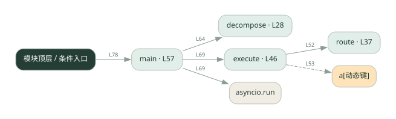

2-11 · 全课程第 31 节
任务分解与路由
029.py
源码快照 121e86eae86d · 静态解析 · 2026-09-10
01 / 要完成的事
把文本拆成子任务，按关键词选择匹配的 Agent 执行。
02 / 为什么要做
不同任务需要交给不同能力，先做路由才能委派。
03 / 当前代码状态
decompose 返回 None，main 随后对它调用 len，会失败；route 也返回 None。execute 的 results 未初始化，且把 append 的返回值赋回列表。L53 的工具执行和追加结果还位于 for 循环外，需要放回循环内才能逐项委派。当前还不能完成路由演示。
检测到 None 赋值或 pass 的位置：33, 42。这些也可能是正常初始化，需结合下方函数职责与源码判断；不能仅凭没有下划线认定完成。
主要展示本地计算、内存状态或模拟流程；是否写文件/启动子进程请看调用表。 本次只做静态解析，没有运行练习，也没有替你填写或修改原代码。
04 / 调用图
打开大图 ↗实线：源码中的直接调用；虚线：函数引用/注册、动态调用或按方法名推断的候选。L 是调用所在源码行号。箭头不表示执行顺序或每次必经；分支、循环、异步调度及框架内部调用需结合源码。灰色是外部/未解析目标，橙色是动态分发；省略 print、len 和常规容器操作以减少干扰。孤立函数可能尚未接入。

先从 main 及模块入口 出发，沿箭头找到本文件函数，再查看外部调用或动态分发。右侧调用清单保留所有静态调用点，能回到原文件逐行对照。
05 / 函数定位
| 函数 / 定义行 | 职责（源码注释） | 内部调用 |
|---|---|---|
decomposeL28 | 把一整个复杂任务拆成子任务列表 | 未发现显式函数调用（可能直接计算、读写状态或尚未实现） |
routeL37 | 根据子任务内容，匹配最合适的子 agent | 未发现显式函数调用（可能直接计算、读写状态或尚未实现） |
executeL46 | 委派每个子任务给匹配的 agent 执行，收集结果 | route, results.append, a[动态键] |
mainL57 | 以源码函数体为准；下列调用展示其依赖。 | decompose, print, len, asyncio.run, execute |
这样做的优点
规则简单可解释，能看到每项任务被谁接走。
代价与局限
关键词覆盖有限，同义词和多意图容易选错；演示执行者不等于真实模型。
适用场景
固定领域的教学路由或小型规则分发。
不宜直接照搬
开放领域、表达变化很大的复杂需求。
动手检验理解
换掉路由关键词，观察没有执行者认领时返回什么。
有未实现位置时先预测，再补齐验证。能启动不等于逻辑正确。
查看全部 16 个静态调用 / 引用点
| 调用方 | 目标 | 源码行 | 类型 |
|---|---|---|---|
| execute | route | 52 | 调用 |
| execute | results.append | 53 | 调用 |
| execute | a[动态键] | 53 | 调用 |
| main | decompose | 64 | 调用 |
| main | print | 65 | 调用 |
| main | len | 65 | 调用 |
| main | print | 67 | 调用 |
| main | print | 68 | 调用 |
| main | asyncio.run | 69 | 调用 |
| main | execute | 69 | 调用 |
| main | print | 70 | 调用 |
| main | print | 71 | 调用 |
| <模块入口> | print | 75 | 调用 |
| <模块入口> | print | 76 | 调用 |
| <模块入口> | print | 77 | 调用 |
| <模块入口> | main | 78 | 调用 |